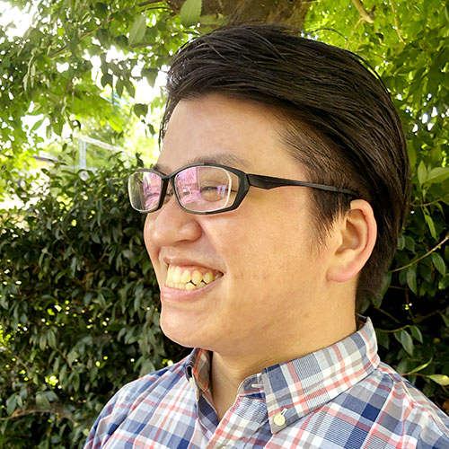
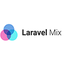
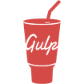
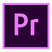

About
326.Fujimaki
Webデザイナー／コーダー
SEOに最適化されたコーディングを得意としています。
不動産系のWEBサイト制作会社で4年間Webデザイナーアシスタントとして、コーディング ・ ページデザイン ・ バナー作成 ・ HTMLメールなどを制作してきました。その中でもコーディングが好きなので、フロントエンドについて勉強中です。
現在はアシスタントデザイナーとして働いていますが、自分の裁量でページデザインやコーディングをしていくことができるような仕事を志望しています。自分の作ったデザインを通して、人々の情報リテラシー向上に貢献できればと考えています。

Career
2007年
二松学舎大学国文学部に入学。白樺派を中心とした近代文学を専攻。デザインとは無縁の学業ではありますが、情報収拾・共有方法をよく実践し、事実 ・ 史実に基づいたプレゼンテーションの大切さを学びました。
2012年
大学卒業後1年間後に、自身が信仰する末日聖徒イエス・キリスト教会の日本福岡伝道部で宣教師として2年間従事。ボランティア活動として宗教活動のほか、無料英会話教室の設営と運営、外国人宣教師を含む新任宣教師の指導、担当区域内にいる宣教師のマネージメントと指導等を行いました。
2014年
宣教師の奉仕終了後、以前より学んでいたWeb制作を仕事にしたいと思い、職業訓練校に入校。半年間で約600時間Webサイト制作に必要なスキルを学習 ・ 演習 ・ 実習しました。
2015年
職業訓練校での訓練終了後、不動産系WEBページ制作会社にWebデザイナーアシスタントとして入社。コーディング ・ ページデザイン ・ バナー作成 ・ HTMLメールなど幅広く携わってきました。近年は新規案件のコーディングを一任されるようになり、SEOの最適化・CSS設計なども行なっています。
2019年
現在にいたる。
Goals
新しいツールの使用方法を学ぶ
“新しい事に挑戦していく”。その強みを生かし、新しいツールの使い方を取得していきたい。
現在は今後使用機会が増えてくると思われる、Adobe XD・AfterEffects・Premiere Proを学習しています。
フロントエンドの理解と実装
SSRやプリレンダリングなどの技術が今後WEBページ制作において必須になると予想し、フロントエンドの知識を深めたい。
SSR導入で代表的なフレームワーク、Vue.js・Nuxt.jsなどを使いこなせるようにJavaScriptを再度学習し直しています。
UXを意識したデザイン
個人の裁量でデザインする機会が今まで少なかったので、自発的にデザインができるようになりたい。
特にUXが大切になってきているのでそれを意識しながらデザインを再履修していきたい。
Skills
HTML5
CSS3
Sass
Photoshop
Dreamweaver
Illustrator
Pug

Git

Laravel Mix
npm-scripts

Gulp
jQuery
XD

Premiere Pro
JavaScript
AfterEffects